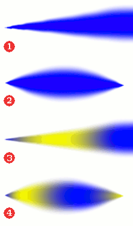
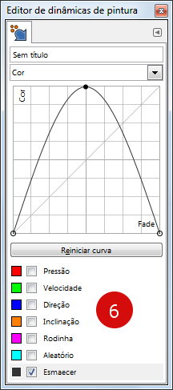
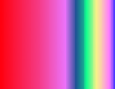
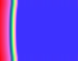
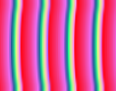
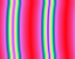

As dinâmicas dão a opção de adicionar uma “dimensão realista” ao pincel ao conectar um ou mais parâmetros de pintura à maneira de usar o pincel. Pode-se, por exemplo, deixar a largura do lápis variar de acordo com a velocidade da caneta do tablet ou do mouse, fazer a cor variar em relação à pressão da caneta do tablet, fazer a cor se alterar conforme a direção da pincelada, e assim sucessivamente. Você pode escolher entre diversas dinâmicas pré-definidas ou ou criar a sua própria. As dinâmicas são criadas para serem usadas juntamente com tablets de desenho, mas algumas delas também estão disponíveis para o mouse.
As dinâmicas podem fazer com que alguns dos comportamentos das ferramentas de pintura pareçam mais com instrumentos físicos “de verdade”.
A área de dinâmicas na janela de opções da ferramenta mostram da esquerda para a direita: o botão para abrir a lista contendo as dinâmicas pré-definidas disponíveis, um campo exibindo o nome da dinâmica pré-definida atual, e o botão de editar mais a direita. Clique sobre o botão  para abrir a janela de diálogo mostrando as dinâmicas pré-definidas disponíveis e selecione outra dinâmica pré-definida.
para abrir a janela de diálogo mostrando as dinâmicas pré-definidas disponíveis e selecione outra dinâmica pré-definida.
A janela de dinâmicas de pincel pode ser aberta
-
através do menu da janela de imagem: → → ,
-
ou clicando no botão na lista de dinâmicas pré-definidas.
O janela dinâmica de pintura é uma janela de encaixe; por favor veja a seção Seção 2.3, “Caixas de diálogo e de encaixe” para ajuda e entender a como as mesmas funcionam.
A partir dessa janela você pode selecionar todas as dinâmicas pré-definidas disponíveis, da mesma forma que na lista de dinâmicas pré-definidas direto na opção de ferramentas. Além disso há cinco botões:
The button bar at the bottom offers the following functionality:
-
 Edit this dynamics: Clicking this will open the
Paint Dynamics Editor dialog
where you will be able to edit the selected dynamics.
Edit this dynamics: Clicking this will open the
Paint Dynamics Editor dialog
where you will be able to edit the selected dynamics.
-
Crie uma nova configuração de dinâmica de pintura: faz exatamente o que diz.
-
Cria uma cópia desta dinâmica: faz uma cópia da dinâmica selecionada.
-
 Delete this dynamics: Delete the selected
dynamics. Note: this button is disabled for the default dynamics
that come with GIMP.
Delete this dynamics: Delete the selected
dynamics. Note: this button is disabled for the default dynamics
that come with GIMP.
-
Atualiza todas as dinâmicas de pintura: atualiza a lista de dinâmicas.
- Overview
-
You can get the dynamics context menu by right clicking on a dynamics preset. Most of the operations on dynamics are also available through buttons at the bottom of the dynamics dialog. Those operations are documented there.
- Editando dinâmicas de pintura, Dinâmicas, Dinâmicas de pincel, Dinâmicas, Dinâmicas de pincel
-
o Lápis,
- Opções de dinâmicas
-
Copy Dynamics Location allows you to copy the path of the selected Dynamics preset to the clipboard.
- Show in File Manager
-
Show in File Manager opens the location of the Dynamics preset in the default File Manager on your system.
O editor de dinâmicas de pintura pode ser ativado através:
-
Do botão de edição na janela de opções da ferramenta,
-
Da janela de seleção de dinâmicas de pintura ao clicar tanto no botão ou no botão .
Você seleciona os comportamentos desejados ao clicar nos pequenos quadrados. Clicar uma segunda vez vai deixar de selecionar a marcação.
![[Nota]](images/note.png)
|
Nota |
|---|---|
|
As dinâmicas pré-instaladas aparecem em cinza, o que significa que você não pode alterar as suas configurações. Para editar as opções você precisará trabalhar numa cópia feita da dinâmica pré-instalada ou criar uma nova dinâmica. |
A principal parte da janela de edição é a tabela na qual você pode decidir quais parâmetros de pincel devem ser afetados pela maneira que você usa sua caneta de tablet (mesa digitalizadora) ou o mouse. Você pode ativar quantos parâmetros e combinações de parâmetros quiser, mas normalmente quanto menos melhor para entender o que está acontecendo.
Cada coluna na tabela representa uma ação de caneta ou mouse exceto as funções “aleatório” e de “esmaecer”. Todas as funções funcionam em mesas digitalizadoras (tablets) gráficas. Algumas das funções também estão disponíveis através do mouse. Essas funções estão assinaladas com “(mouse)” nas listas abaixo. As descrições levam em conta as configurações padrão de todas as funções. Não se preocupe em decorar as listagens: essa é apenas a documentação formal de como cada combinação funciona. Na prática, você pode criar suas próprias dinâmicas de pintura de forma mais intuitiva, sem se preocupar com a descrição exata nas listagens abaixo.
-
Pressão: Permite decidir quais aspectos de ação da ferramenta serão afetados conforme varia a pressão da caneta sobre o tablet.
-
Velocidade: (mouse) É a velocidade da pincelada
-
Direção: (mouse) É a direção de movimento do pincel.
-
Inclinação: O comportamento da função depende da inclinação da caneta.
-
Rodinha: A saída depende da rotação da caneta ou da configuração da rodinha no aerógrafo da caneta.
-
Aleatório: (mouse) A opção selecionada mudará de forma aleatória.
-
Esmaecer: (mouse) A opção selecionada irá esmaecer a partir do começo da pincelada, ou se tornar mais intensa, dependendo das configurações de esmaecimento no menu de opções de dinâmica na janela de opções de ferramentas.
Cada linha mostra um parâmetro de pincel e sete caixas de marcação, uma para cada ação. Você conecta os parâmetros às ações ao clicar nas caixas apropriadas. Clicar em uma caixa já selecionada irá desfazer a conexão.
- Opacidade
-
Pressão: Pressione com mais força para tornar a pincelada menos transparente.
Velocidade: (mouse) A opacidade diminui conforme a velocidade da caneta aumenta.
Direção: (mouse) A opacidade depende da direção da caneta ou do mouse. Esse efeito parece possuir um toque de aleatoriedade embutida nele, devido a dificuldade de se saber a direção exata de movimento quando a pincelada se inicia.
Inclinação: A opacidade depende da inclinação da caneta.
Wheel
Aleatório: (mouse) A opacidade se altera de forma aleatória em um intervalo definido pelo seletor de opacidade na janela de opções da ferramenta.
Esmaecer: (mouse) Começando com completa transparência e terminando com a opacidade definida no seletor de opacidade na janela de opções da ferramenta.
- Tamanho
-
Pressão: Pressione com mais força para tornar o pincel maior.
Velocidade: (mouse) Aumentar a velocidade diminui a grossura do pincel.
Direção: (mouse) O tamanho do pincel depende da direção de movimento da caneta ou do mouse.
Inclinação: O tamanho do pincel depende da inclinação da caneta.
Wheel
Aleatório: (mouse) O tamanho do pincel muda aleatoriamente até o máximo selecionado no seletor de tamanho de pincel na janela de opções da ferramenta.
Esmaecer: (mouse) O traço varia de um pincel fino até o tamanho determinado no seletor de tamanho de pincel na janela de opções de ferramentas.
- Ângulo
-
- Cor
-
Por padrão a cor usada é a cor de frente da caixa de ferramentas. Entretanto, se a cor é ativada no editor de dinâmicas, então a cor passa a ser obtida a partir de um ponto do degradê ativo (que pode ser escolhido na seção de “Opções de dinâmica” da janela de opções da ferramenta)
Velocidade: (mouse) A pequenas velocidades a cor é selecionada do lado direito do degradê. Conforme a velocidade aumenta a cor é escolhida de uma posição cada vez mais para a esquerda do degradê.
Direção: (mouse) A direção determina de qual ponto do degradê a cor é selecionada. (Veja as curvas de ajuste fino, abaixo, para poder configurar melhor qual cor vai para qual direção)
Aleatório: (mouse) A cor é selecionada de um ponto aleatório do degradê.
Esmaecer: (mouse) A cor inicial é coletada do lado esquerdo do degradê e então cada vez mais do lado direito enquanto a pincelada é feita. O comportamento do esmaecimento é definido nas opções de esmaecimento na janela de opções da ferramenta.
- Dureza
-
A opção de dureza é útil apenas para pincéis difusos.
Velocidade: (mouse) Em velocidades reduzidas o pincel é duro e se torna mais suave conforme a velocidade aumenta.
Aleatório: (mouse) A suavidade do pincel varia aleatoriamente.
Esmaecer:(mouse) O pincel se torna menos suave durante a pincelada. O comportamento do esmaecimento pode ser selecionado as opções de esmaecimento na janela de opções da ferramenta.
- Força
-
- Proporção
-
O seletor de proporção na janela de opções da ferramenta precisa estar configurado em um valor diferente do valor padrão de 0,00 para que essa dinâmica tenha efeito. Se o seletor de aspecto de proporção está marcado para um valor negativo então a largura do pincel irá variar enquanto que a altura do pincel será constante. Se o seletor marca um valor positivo então apenas a altura do pincel irá variar.
Velocidade: (mouse) A proporção do pincel (largura / altura) varia de acordo com a velocidade do pincel.
Direção: (mouse) A proporção do pincel irá variar de acordo com a direção do pincel. O efeito parece ter um toque de aleatoriedade embutido.
Aleatoriedade: (mouse) A proporção do pincel varia aleatoriamente.
Esmaecer: (mouse) Se o seletor de proporção marca um valor positivo então o pincel irá esmaecer da altura máxima no inicio da pincelada até a altura selecionada no seletor de proporção. Se o seletor marca um valor negativo então o esmaecimento do pincel vai esmaecer da largura máxima até a largura determinada no seletor de proporção. O comportamento do esmaecimento é selecionado nas opções de esmaecimento na janela de opções da ferramenta.
- Espaçamento
-
O espaçamento é a distância entre as marcas deixadas pelo pincel ao se desenhar linhas. Com essa opção selecionada o espaçamento é afetado dependendo como a caneta ou mouse é usado. O espaçamento mínimo é o definido no pincel, e as variações aumentam o espaçamento acima desse mínimo.
Velocidade: (mouse) O espaçamento entre as marcas deixadas pelo pincel aumenta com o aumento da velocidade.
Direção: (mouse) O espaçamento varia com a direção de movimento do pincel. O efeito parece ter um toque de aleatoriedade embutida.
Aleatório: (mouse) O espaçamento varia de forma aleatória.
Esmaecer: (mouse) Começa com um grande espaçamento que gradualmente torna-se menor. O comportamento do esmaecimento pode ser definido nas opções de esmaecimento na janela de opções da ferramenta.
- Taxa
-
Essa opção se aplica ao aerógrafo, ferramenta de desfocar, a ferramenta de borrar, e a todas as ferramentas que possuam efeitos baseado no tempo em que estão acionadas, mesmo sem mover o pincel.
As ações dessas ferramentas acontecem de forma mais rápida ou mais lenta. O “total da taxa” (em inglês: rate) depende da configuração do seletor de taxa na janela de opções da ferramenta.
- Fluxo
-
É útil apenas para o aerógrafo: mais ou menos tinta é liberada. A quantidade de fluxo depende da configuração do seletor de fluxo na janela de opções da ferramenta.
- Espalhar
-
Normalmente o pincel desenha uma linha “carimbando” diversas marcas do pincel em sequência. Adicionar espalhamento significa que as impressões do pincel serão espalhadas ao longo da linha de pintura. A quantidade de espalhamento depende da configuração do seletor de espalhamento na janela de opções da ferramenta.
Pressão: Com menos pressão as impressões do pincel são alargadas de acordo com o valor selecionado no seletor de espaçamento. Conforme a pressão aumenta o espaçamento diminui.
Velocidade: (mouse) A pequenas velocidades as impressões do pincel são alargadas de acordo com o valor definido no seletor de espaçamento. Conforme a velocidade aumenta a quantidade de espalhamento diminui.
Direção: (mouse) O efeito de espaçamento depende da direção do pincel.
Aleatório: (mouse) O espalhamento varia de forma aleatória.
Esmaecer: (mouse) Começa com nenhum espalhamento e termina com a quantidade de espalhamento definida no seletor de espalhamento. O comportamento dessa ferramenta é selecionado nas opções de esmaecer na janela de configurações da ferramenta.
Se as opções atuais não satisfazem a sua necessidade, então você pode ajustar as configurações a partir do editor de dinâmicas de pintura. Clique na seta apontada para baixo para abrir o menu de lista e selecione para qual opção alterar.
Clique em uma das opções para abrir a janela de customização. A parte superior da janela contém uma curva na qual você pode ajustar o comportamento dos parâmetros selecionados na parte inferior da janela. Você pode arrastar a curva posicionando o cursor do mouse sobre a curva, pressionando o botão esquerdo do mouse e movendo a curva para onde você desejar dentro do diagrama.
Figura 14.46. Opções de dinâmicas

O traçado do pincel
O tamanho do pincel - curva de esmaecimento

A cor - curva de esmaecimento
Os exemplos mostrados são breves, mas dão uma ideia de como usar essas funções. Se sinta livre para tentar outras combinações. Nesses exemplos a cor de frente foi selecionada para azul (#0000ff) e a cor de fundo para amarelo (#ffff00). Esmaecimento: 200 pixels. Tamanho do pincel: 72. Todas as outras configurações são valores padrão exceto para esses valores descritos aqui.
-
O exemplo 1 mostra o resultado quando o tamanho do pincel é conectado ao esmaecimento. Opções padrão. O tamanho do pincel começa do zero e aumenta até o tamanho definido do seletor de tamanho de pincel na janela de opções da ferramenta.
-
No exemplo 2 o tamanho do pincel continua conectado à ferramenta de esmaecimento, mas a curva de esmaecimento está configurada como na imagem 5. O pincel começa do zero, esmaece até o tamanho máximo e então esmaece para zero novamente.
A largura total de esmaecimento é configurada ao longo do eixo x da esquerda para a direita. O eixo y é determinado pelo tamanho do pincel. Na parte inferior o tamanho do pincel é zero, e na parte superior do diagrama o pincel é configurado no tamanho total de acordo com o tamanho configurado no seletor na janela de opções de pincel. Analise o exemplo e a curva para ver a relação.
-
No exemplo 3 o tamanho do pincel está desconectado da ferramenta de esmaecimento. A cor é conectada com a opção de esmaecimento com a curva como selecionado na imagem 6. No começo do desenho a cor é selecionada a partir do lado esquerdo do gradiente, e então gradualmente mais a partir do lado direito do gradiente, e então finalmente volta a selecionar a partir do lado esquerdo novamente.
Como sempre o eixo x é o tamanho total de esmaecimento. Quando a curva está perto da parte inferior do diagrama a cor é selecionada a partir do lado esquerdo do degradê. Com a curva no torpo do diagrama a cor é selecionada a partie do lado direito do degradê.
-
O último exemplo mostra uma combinação dessas duas configurações. Ambos os tamanhos do pincel e da cor estão conectadas à função de esmaecimento com as curvas selecionadas como nas imagens 5 e 6.
Muitos dos comportamentos das dinâmicas também dependem das configurações das opções de dinâmicas na janela de opções da ferramenta e vice-versa. Por exemplo, o esmaecimento não irá funcionar se ele não estiver marcado na seção de dinâmicas. Uma outra forma bem útil de desenhar a curva, para várias das opções é simplesmente inverte-la para uma reta descendente, em vez de ascendente. Isso vai inverter o comportamento padrão da combinação marcada: por exemplo, numa dinâmica de espalhamento X velocidade, por padrão, o espalhamento é alto com a velocidades baixas, e se estreita com velocidades altas. Se a curva for deixada como uma reta descendente, você terá pouco espalhamento com velocidades baixas, e vice-versa.
- Opções de esmaecimento
-
Esse seletor determina o tamanho do esmaecimento. O que vai de fato acontecer depende da configuração da dinâmica. Se selecionado para agir na cor, por exemplo, então a cor irá se alterar entre o degradê atual, começando do lado esquerdo do degradê e se movendo até o lado direito do degradê.
As opções de esmaecimento possuem uma lista de opções que determina comoo esmaecimento será repetido (se for).
Figura 14.48. Ilustração dos efeitos das três opções de repetir de degradê, para o degradê Abstract 2.

Degradê Abstract2

Nenhum

Onda de serra

Onda triangular
Essa opção determina o que acontecerá caso uma pincelada se estenda além do comprimento especificado no seletor. Existem três possibilidades:
-
Nenhum significa que a cor de fim do degradê será usada na parte restante do traçado;
-
Onda de serra significa que o degradê será recomeçado do início, o que produzirá uma descontinuidade de cores;
-
Onda triangular significa que o degradê será aplicado no sentido contrário, para depois voltar e seguir adiante até o fim do traçado.
-
- Opções de cor
-
Aqui você pode escolher o degradê a ser usado como cor de origem ao usar o pincel com a opção de cor selecionada nas dinâmicas de pintura. Clique na caixa que mostra o degradê para alterar para outro degradê da lista.
Se nenhuma opção de cor estiver selecionada nas dinâmicas usadas atualmente, o pincel usará a cor de frente definida na caixa de ferramentas.